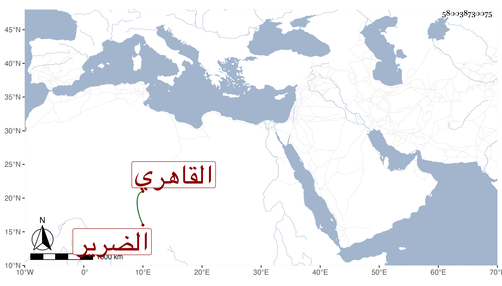

0902Sakhawi.DawLamic.ITO20230111-ara1.EIS1600.580038730075
Biography ID: 580038730075
671
علي بن بطيخ القاهري الضرير أحد رؤساء قراء الجوق . ممن جود على الشيخ حبيب وبرع في الموسيقا ولذا كان يسلك في قراءته اقتفاء الأنغام وغير ملاحظ أدب التجويد وما كنت أحمده في ذلك ولكنه كان أستادا بحيث أنه ربما يسد بآحاد المهملين . وليس بطيخ اسم أبيه وإنما كتبته هنا لعدم معرفة اسمه فاكتفيت بشهرته . مات في عاشر المحرم سنة ست وخمسين عن نحو السبعين وهو عم الشهاب أحمد بن البدر محمد بن بطيخ أحد الأطباء هو وقراء السبع والده .
